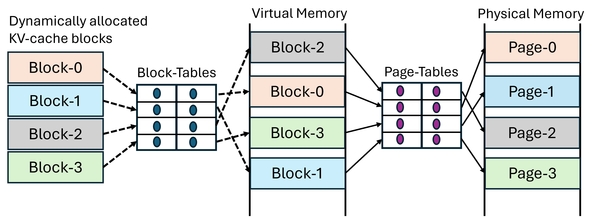
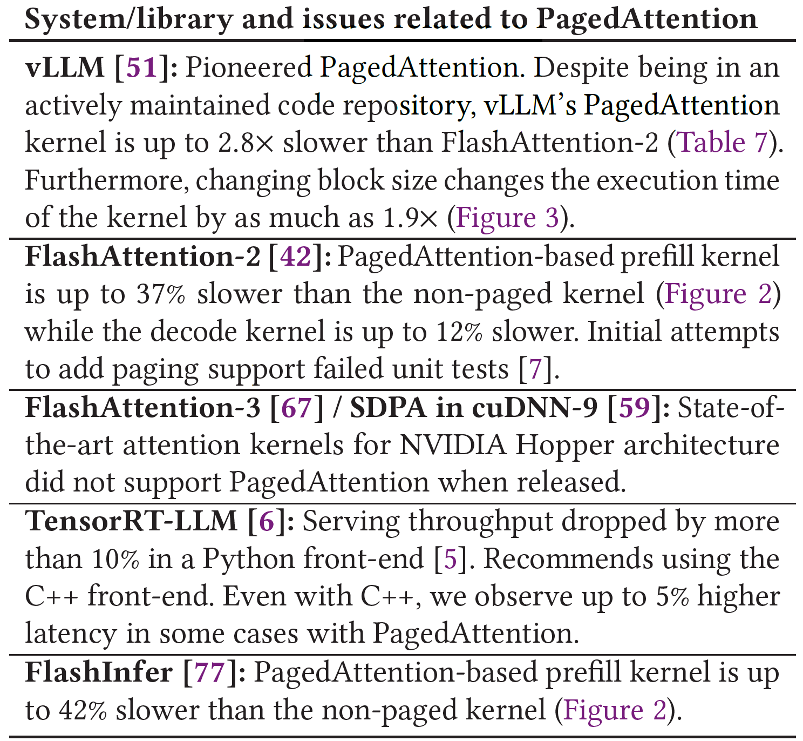
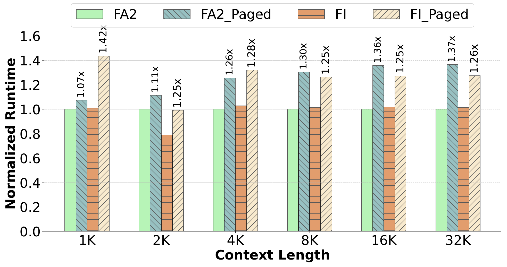
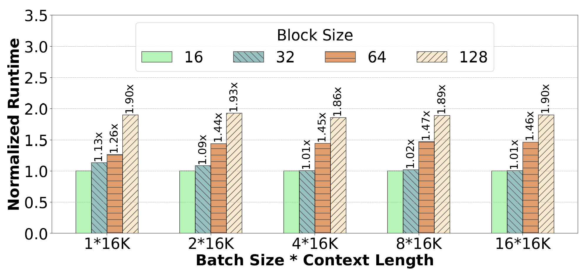
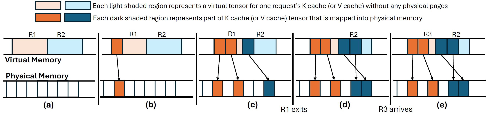
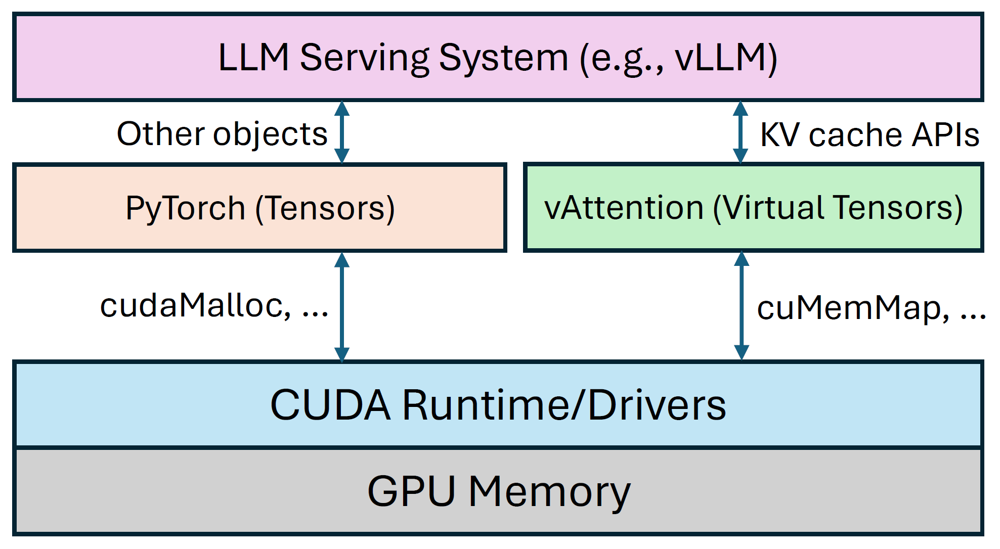
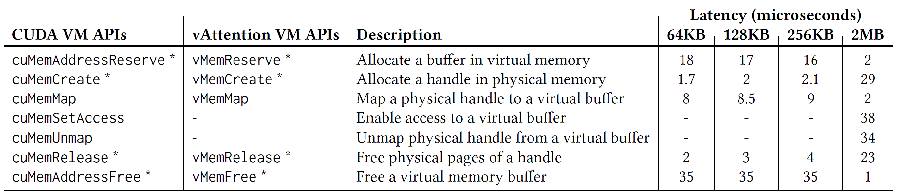
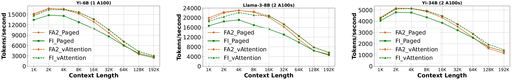
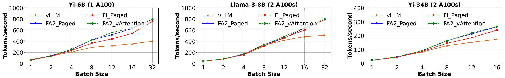

vAttention: Dynamic Memory Management for Serving LLMs without PagedAttention
ASPLOS ’25
gpu
llm
attention
memory
systems
vAttention: Dynamic Memory Management for Serving LLMs without PagedAttention
Background & Motivation
LLM Inference & KV Cache
- Large Language Models (LLMs) generate text token-by-token.
- KV Cache: Append-only tensors stored in GPU memory, reused across generation steps.
- Consumes the majority of GPU memory.
The Memory Fragmentation Problem
- KV cache size grows dynamically (one token per step).
- Final size is unknown beforehand.
- Static Allocation: Pre-allocating for max length leads to massive internal fragmentation.
- Wasted memory limits batch size and throughput.
PagedAttention: The Prior Solution

- Inspired by OS demand paging.
- Allocates KV cache in small, fixed-size physical blocks on demand.
- Greatly reduces fragmentation, increases memory utilization.
- Became the de facto standard (vLLM, TensorRT-LLM, etc.).
Problem 1: Scattered Virtual Blocks
- PagedAttention manages physical memory dynamically.
- Side Effect: Breaks the virtual memory contiguity of the KV cache.
- A request’s KV cache is scattered across non-contiguous virtual blocks.
Problem 2: Requires Kernel Rewriting

- Standard attention kernels (FlashAttention, etc.) assume contiguous K and V tensors.
- PagedAttention requires kernels to be modified to handle non-contiguous blocks (pointer chasing).
- Complex, error-prone, creates maintenance burden.
- Porting new kernel optimizations is slow, often lags behind.
Problem 3: Performance Overhead (GPU kernel)

- Extra instructions in the critical path for block lookups.
- Paged kernels can be significantly slower than non-paged versions (up to 42% in prefill).
Problem 3: Performance Overhead (GPU kernel)

- Increased register pressure, potential cache misses.
- Large block size decreases L1 cache efficiency
- Cache pollution & lower hit rate
- Small block size increases CPU management overhead
Problem 4: Performance Overhead (CPU) & Redundancy
- CPU Overhead: Serving framework needs to manage block tables and pass them to the GPU kernel on every iteration. Can be >10% overhead.
- Redundancy: User-space memory manager duplicates virtual-to-physical mapping logic already present in the OS/driver.
Motivation
- Goal: Achieve dynamic physical memory allocation (like PagedAttention) to avoid fragmentation while maintaining virtual memory contiguity for the KV cache.
- Benefits:
- Use standard, unmodified, highly-optimized attention kernels.
- Eliminate kernel maintenance burden.
- Reduce CPU/GPU overheads.
- Simplify the serving system design.
System Design
vAttention: Core Idea
- Leverage CUDA Virtual Memory Management (VMM) APIs.
- These APIs allow decoupling virtual address space reservation from physical memory allocation and mapping.
- Similar to how modern OSes manage memory (mmap/mprotect).
vAttention: Mechanism

- Reserve Contiguous Virtual Buffer: Pre-reserve a large, contiguous virtual address space for the max batch’s KV cache.
- Allocate Physical Pages On-Demand: Use
cuMemMapetc. to allocate physical GPU pages on demand as a request generates tokens. - Map Physical to Virtual: Map the allocated physical pages into the correct offset within the contiguous virtual buffer.
- Result: Kernels see a contiguous virtual tensor; physical memory is committed dynamically.
vAttention: Integration

- vAttention library provides simple APIs (
init,alloc_reqid,step,free_reqid). - Serving framework (e.g., vLLM) calls
stepbefore each iteration. - vAttention ensures physical pages are mapped for active requests.
- Uses standard PyTorch allocator for other tensors (activations, weights).
Optimization 1: Hiding VMM API Latency
- CUDA VMM APIs (
cuMemMap) can be slow (~tens of µs per call). - Decode Overlap: Predict next step’s memory need (1 token/req) and map pages in a background thread during current step’s computation.
- Prefill Optimization:
- Deferred Reclamation: Don’t immediately free pages of completed requests.
- Eager Allocation: Reuse freed pages for new requests, map extra pages ahead-of-time in background.
Optimization 2: Mitigating Fragmentation (Page Size)

- Default CUDA VMM page size is often large (2MB), causing internal fragmentation.
- Problem: CUDA VMM APIs are in closed-source driver.
- Solution: Modify open-source UVM driver components to add new APIs (
vMemMap, etc.) supporting smaller physical page sizes (64KB, 128KB, 256KB). - Provides fine-grained physical allocation similar to PagedAttention block sizes.
Evaluation
Setup
- Models: Yi-6B, Llama-3-8B, Yi-34B
- Hardware: 1-2 NVIDIA A100 80GB GPUs (NVLink connected)
- Framework: Modified vLLM
- Baselines:
- PagedAttention kernels (
FA2_Paged,FI_Paged, vLLM) - Non-paged kernels with vAttention (
FA2_vAttention,FI_vAttention)
- PagedAttention kernels (
Prefill Throughput

- non-paged kernels with vAttention achieves comparable or better results.
Decode Throughput
